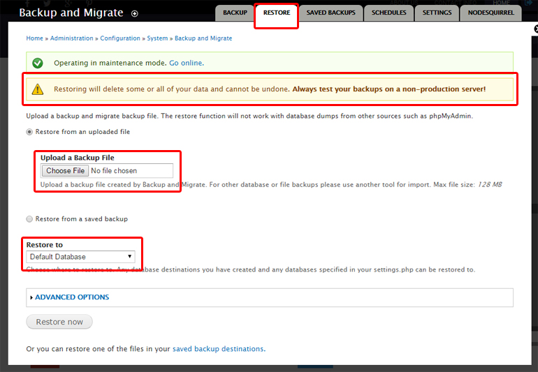
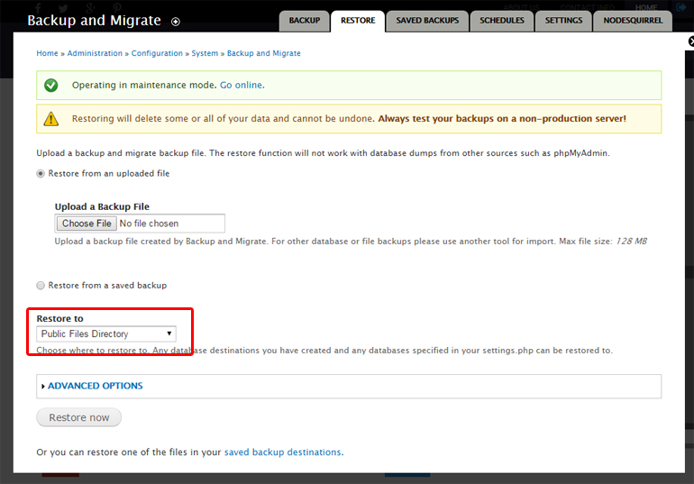

4. Omni 7.x Sample Content Setup
Introduction
Sample content help user understand how everything setup as in demo. It should install in a testing or development environment.
Omni 7.x Sample Content Setup process is quite simple. It use Drupal Backup and Migrate module to install a replica of Omni demo content.
Simplify Steps:
- Install Drupal
- Install Required Modules
- Install Omni Theme
- Enable Backup and Migrate
- Restore Database
- Restore Public Files Directory
- Change User Name & Password
- Install Drupal
- Install Required Modules
- Install Omni Theme
- Enable Backup and Migrate
- Restore Database
- Restore Public Files Directory
- Change User Name & Password
In Detalis
- Install Drupal 7
Download latest Drupal 7 and install it as usual. For how to install Drupal, you can check Drupal 7 Quick Start user guide for detail.
- Install Required Modules
Unzip & upload all modules in modules folder that come with Omni Drupal 7. Not need to enable it. For how to install Drupal module, you can check Omni 7.x Basic Setup user guide for detail.
- Install Omni Theme
Upload omni_magazine theme files. Not need to enable it. For how to install Drupal theme, you can check Drupal 7 Quick Start user guide for detail.
- Enable Backup and Migrate
Go to Drupal Modules section and enable Backup and Migrate module ONLY. Then go to Configuration > Media > File system and setup Private file system path as sites/default/files/private then save configuration. The path must be exact, you can change the path later if you wish.
- Restore Database
Now go to Configuration > System > Backup and Migrate, click on Restore tab.

- Notice the warning!
- Select Restore from an uploaded file
- Upload a Backup File > Choose file from drupal 7/document/sample content/omni-magazine-7.mysql.gz
- Make sure Restore to as Default Databse.
- Click Restore Now, it will take few minutes to restore.
- Restore Public Files Directory

- Select Restore from an uploaded file again
- Upload a Backup File > Choose file from drupal 7/document/sample content/omni-magazine-7-public-files.tar.gz
- Make sure Restore to as Public Files Directory.
- Click Restore Now.
- After Restore complete, it might show 4 warning messages. Those warning can be ignored, it simply tell that we don't have permission to overwrite.
- Check Sample Content
Now you can check your sample content site. It should have Omni theme and required modules enabled with all features setup.
- Change User Name & Password
You will notice that there is only one user now, name as demo with admin right. You should change his password(demo) and email to something else immediately.